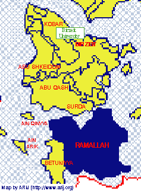

|
|

Birzeit University organizes the academic year into two regular semesters running from September to January, and February to June, and an intensive six-week summer semester in July and August. In the autumn of 1995, the first semester opened on September 18, 1995 with a few straggling Gaza students on campus who had managed to hold on to permits from the summer semester (permits which, as usual, were issued toward the end of the semester). For all practical purposes, however, no permits were issued for the first semester until final exams were approaching.
During the last week of November permits began arriving for female students, almost a month later the officials began issuing permits for the male students. By Monday, 1 January, most students had managed to get their hands on permits. On Tuesday, 2 January, the end-of-the year break finished and most students returned to campus for final exams for the first semester. Then, there were the Gaza students, most of whom were arriving on campus to begin their first semester studies!
Students, for the most part, lost the first semester but hopes lifted in anticipation of the second semester. The university rearranged the course listings to enable new students to begin their studies second semester, instead of first. Students paced the halls of the university contemplating class plans: What to take first? How many hours to try to squeeze in? What requirements can only be taken at Birzeit vs. what could, in a pinch, be transferred from one of the two universities in Gaza (anticipating being stuck in Gaza permitless ... again)? Which course would have to wait an entire year because the prerequisite course was only offered first semester?
The situation seemed rescueable. Then, in March, Palestinian extremists attacked buses and a shopping mall in Jerusalem, Tel Aviv, and Ashkelon killing 59 Israelis. All permits were canceled–summarily and collectively. No students were involved in the attacks. Nor were the students in possession of any special privilege through which they posed a special threat to Israeli security (i.e. they are banned from Jerusalem and Israel). Rather, they were an identifiable group on whom punishment could be imposed.
The second semester was lost ... and the summer course ... and.... The students are still waiting for permission to resume their studies. Any student who obeyed the limitations imposed by the permit system would have lost the entire academic year.
The permit system stands in the face of peace. It incites anger and hatred, without need or benefit. This permit system places students as a lost item on the negotiating table, instead of inviting them to join in the movement to create a lasting peace it presents daily reminders of the current reality.

Despite the system, Gaza students are determined to continue their studies, to exercise their right to an education … so they come. They come without permits and they stay without permits. They defy the illegal measures meant to label them illegal in an effort to rebalance the odds. That they will come is as certain as the flow of water toward the sea. Each arrival marks a victory for the supporters of peace in the Middle East. Each arrival represents a possibility for something different.
Once here, however, students spend too much of their energy evading arbitrary checkpoints and avoiding arrest. Birzeit University is located in Area B--the area colored in yellow in the map to the left. In Area B the Israeli military maintains "overriding responsibility for security for the purpose of protecting Israelis and confronting the threat of terrorism" (Article XIII, Clause 2a). Practically this means that Israeli soldiers remain in the area and that Israeli military authorities establish random checkpoints on the roads surrounding the university. The possibility of arrest never abates.
As a result many students have moved from the villages near the university to the town of Ramallah which has been designated Area A (colored blue). In Area A, the Palestinian Authority has full responsibility for internal security and public order. Under the Oslo agreements, the Israeli military should not enter Area A. Students residing in Ramallah still must face the danger of arrest each day as they travel to the university.
The road between Birzeit and Ramallah haunts students trying to continue their education. It is not unusual that an Israeli military checkpoint would be set up along the road to search cars. Birzeit University engineering student Abdallah was arrested last year on his home from buying medicine. Click here to read what happened.
During the 1995-96 academic year approximately 60 Gaza students managed to graduate from Birzeit University. For many of the students this marked the completion of a lengthy endeavor, often marked by at least one trip to prison (for studying without "permission"), and numerous courageous trips and less than ordinary rides between Gaza and the West Bank. Their accomplishments seem especially noteworthy at the end of a year marked most of all by a profound absence of permits.
end of part two